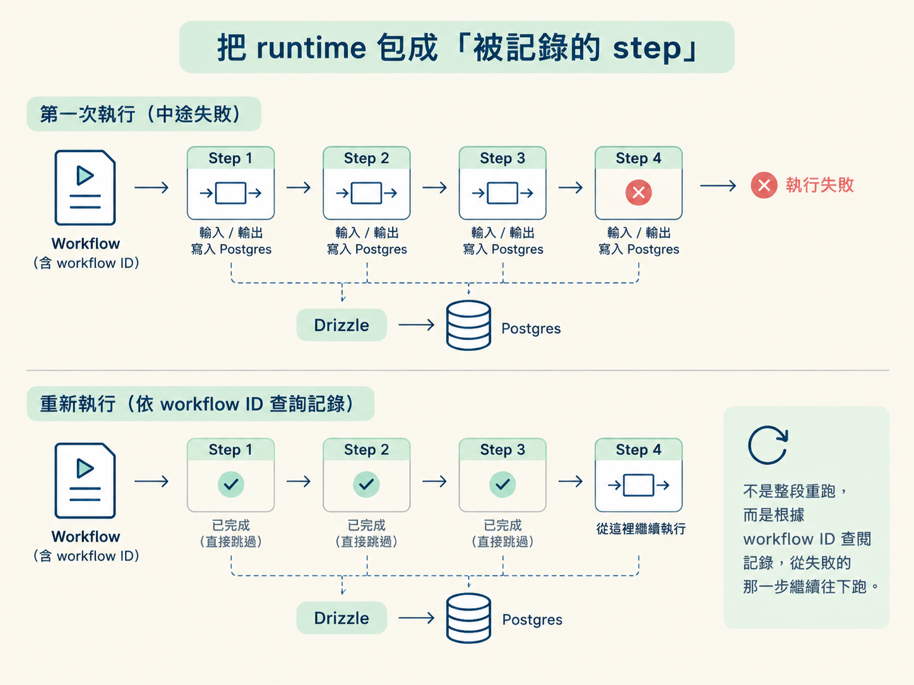
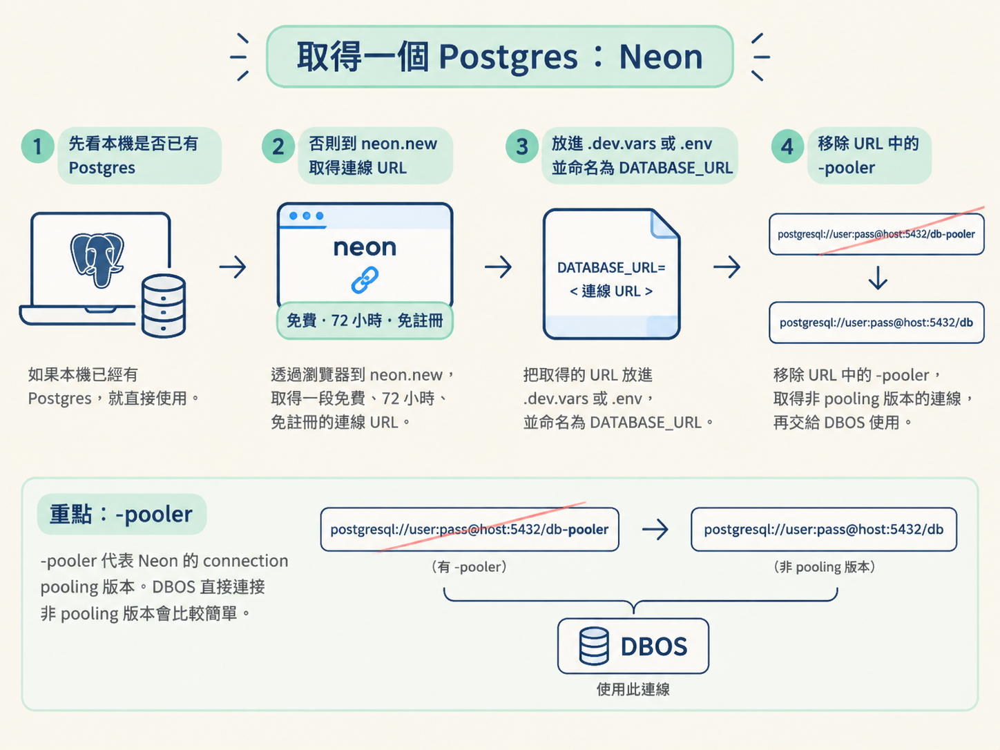

當工作流跑到一半失敗時，你不應該只能整段重跑，讓已完成的工作再次產生副作用。本步會說明 DBOS 如何用 workflow ID 記錄並重播 step 的輸入與輸出，讓失敗的工作流跳過已完成的工作；同時也會比較 DBOS 與 Temporal、Cloudflare、Inngest、Upstash、Vercel Workflows，最後用 Neon 取得一個 Postgres 資料庫。
前面三步已經把需求拆清楚：執行必須獨立、失敗後要能從斷點接續，不可逆的動作則必須冪等。現在要選一個工具，把這些要求真正落地。
本課程選擇 DBOS。它是一個以 Postgres 為骨幹、用來建立「持久化 workflow（工作流）」的框架。
它的核心合約很簡單：
把 runtime 的每一步包成 DBOS 的 step；每個 step 的輸入與輸出都記錄進資料庫。
假設某個 workflow 跑到一半失敗。重新執行時，DBOS 會根據 workflow ID 查閱每個 step 的記錄。如果發現某一步已經完成，就直接跳過，不從頭開始。

這和第二步的 CI/CD 心智模型相同：只 retry 失敗的 stage，不重跑前面已完成的 stage。差別是，現在由資料庫保存這些執行紀錄。
這裡有一條不能混淆的分工：
DBOS 負責記錄與重播；你負責讓每個 step 冪等。
如果某個 step 因為失敗而再次執行，它必須能產生相同結果，或至少不重複造成錯誤的副作用。DBOS 能方便地跳過已完成的 step，卻不能替你保證 step 本身是安全的。
例如，發送付款、建立資料列或呼叫外部 API，都可能留下不可逆的影響。因此，每一條 step 都要先問自己：如果它被執行兩次，結果會不會多扣一次款、多寄一封信，或建立兩筆資料？這就是分散式系統裡通用的冪等檢查。
除了保存 step 的輸入與輸出，DBOS 也會保存 event log（事件日誌）。你 fire 出去的每一個事件都會留下紀錄，形成一份可追查的執行歷史。這些資料會透過 Drizzle——負責與 Postgres 對話的 ORM／SDK——寫進 Postgres。
市場上有很多工具都能提供 durable execution，也就是讓執行結果在中斷後仍然可以接續。真正的差別，往往是導入時要付出多少額外成本：
| 引擎 | 性質 | 對你的摩擦 |
|---|---|---|
| Temporal | 獨立服務，業界最大咖 | 要另起服務、概念重，沒有後端經驗時較吃力 |
| Cloudflare / Inngest / Upstash / Vercel Workflows | 託管服務 | 要付費，也要再接一個 service |
| DBOS | database-backed 框架 | 幾乎不用改 code，直接掛上你的 Postgres |
選 DBOS 的理由很務實：
如果你想把心力放在 harness，而不是後端基礎設施，DBOS 就是用較少的整合摩擦，換取持久化執行能力。這也是本課程選它的原因。
DBOS 需要 Postgres 才能保存 workflow、step 與 event log。你本機已經有 Postgres，就直接使用現有資料庫；如果沒有，最快的方式是使用 Neon：
.dev.vars 或 .env，變數名稱設為 DATABASE_URL。貼上之前，先處理一個容易踩到的小坑：移除 URL 裡的 -pooler。
DATABASE_URL 要去掉 -pooler：那是資料庫連線池版本，和 DBOS 一起使用會增加複雜度。
-pooler 代表 Neon 的 connection pooling 版本。DBOS 直接連接非 pooling 版本會比較簡單；移除這段後，取得的就是適合交給 DBOS 使用的資料庫連線。

現在整條脈絡已經接上：執行要獨立於任何觀察者（第一步）；用 CI/CD 理解 retry、replay 與斷線恢復（第二步）；不可逆動作帶出冪等與 exactly-once 的要求（第三步）；最後選擇 database-backed 的 DBOS，用 workflow ID 記錄與重播 step，再準備一個 Postgres（第四步）。
下一步就能動手，把 runtime loop 接上 event log 與 DBOS workflow，讓這套機制真正跑起來。